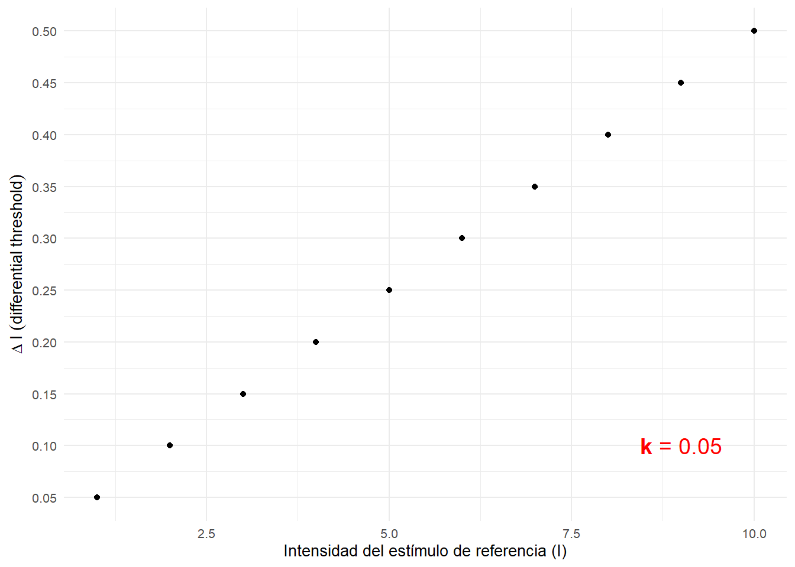
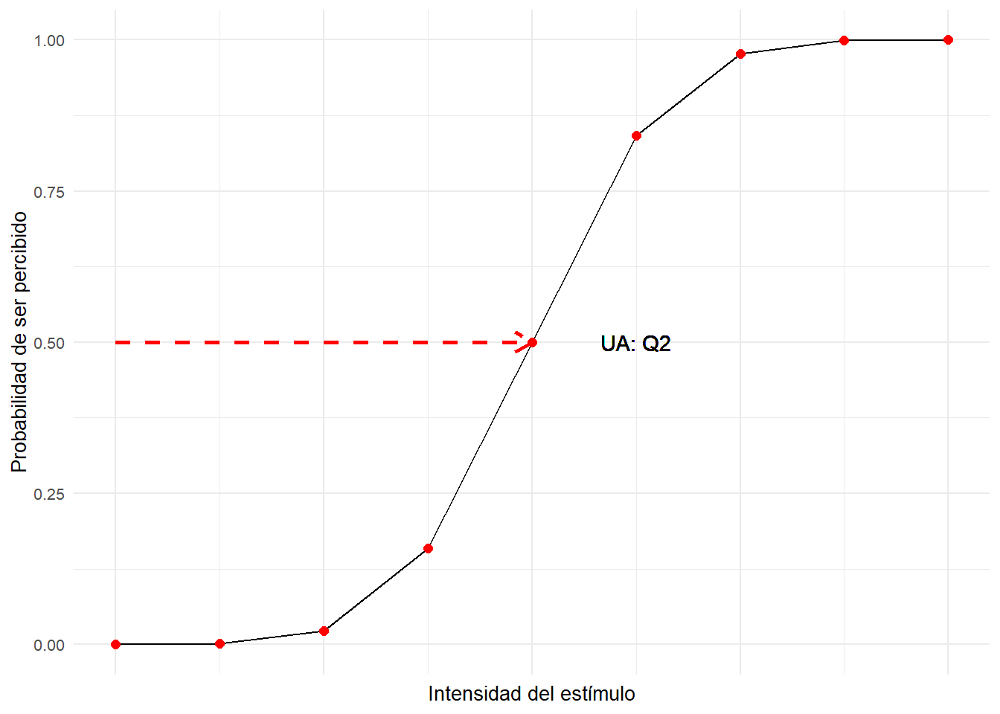
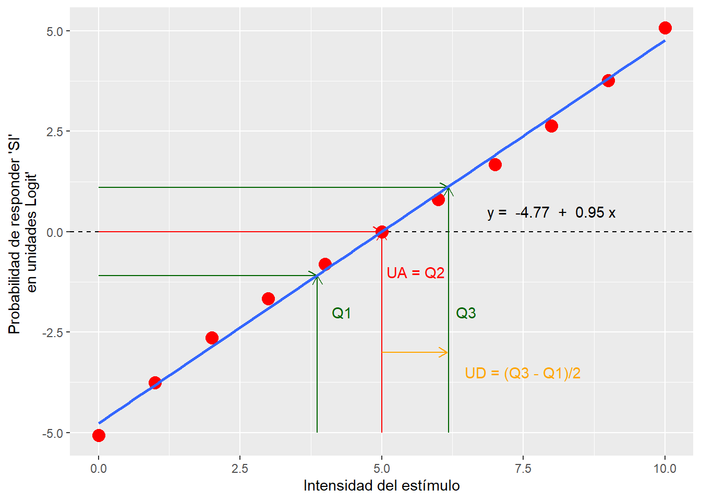

## Warning: package 'tidyverse' was built under R version 3.5.1## -- Attaching packages ------------------------------------------------------------------------------------------------------------------------------------------------ tidyverse 1.2.1 --## v ggplot2 3.0.0 v purrr 0.3.2
## v tibble 1.4.2 v dplyr 0.7.5
## v tidyr 0.8.1 v stringr 1.4.0
## v readr 1.1.1 v forcats 0.3.0## Warning: package 'ggplot2' was built under R version 3.5.1## Warning: package 'purrr' was built under R version 3.5.3## Warning: package 'stringr' was built under R version 3.5.3## -- Conflicts --------------------------------------------------------------------------------------------------------------------------------------------------- tidyverse_conflicts() --
## x dplyr::filter() masks stats::filter()
## x dplyr::lag() masks stats::lag()##
## Attaching package: 'cowplot'## The following object is masked from 'package:ggplot2':
##
## ggsave##
## DEoptim package
## Differential Evolution algorithm in R
## Authors: D. Ardia, K. Mullen, B. Peterson and J. Ulrich##
## Attaching package: 'quickpsy'## The following object is masked from 'package:stats':
##
## deviance## Warning: package 'broom' was built under R version 3.5.1## Warning: package 'knitr' was built under R version 3.5.3## Warning: package 'circular' was built under R version 3.5.1##
## Attaching package: 'circular'## The following objects are masked from 'package:stats':
##
## sd, varPráctica 2: Psicofísica clásica
Obtención de los umbrales de detección de la colinealidad.
Conceptos previos: De la Filosofía a la Psicología
El paso de la Filosofía a la Psicología como ciencia ha sido objeto de debate durante largo tiempo y establecer precursores a veces puede ser inexacto. Sin embargo, hay momentos en el desarrollo de la epistemología o filosofía sobre el conocimiento que han ayudado historicamente a entender por qué y cómo el objeto de estudio de la Psicología, es decir, el estudio de la conducta pasó a considerarse una ciencia. Si estás más interesado en qué es conducta, puedes continuar aquí continúa aquí.
La corrientes filosóficas imperantes hasta la ilustración abogaban porque el conocimiento podia existir independientemente del observador y que, de hecho, el mismo podría acceder a él mediante ciertos criterios de verdad basados en la lógica. El observador se trata por lo tanto de un sujeto pasivo que ya posee sensaciones e ideas a las cuales sólo necesita acceder para conocerlas. Es durante la Ilustración, en el siglo XVII cuando Inmanuel Kant utiliza la metáfora del giro copernicano (pasar de un universo geocéntrico a un universo heliocéntrico) para situar de nuevo al observador en una posición activa sobre el conocimiento. Kant argumenta que para llegar al conocimiento, las sensaciones han de pasar varios niveles de conocimiento. En primer lugar, la sensibilidad que se encargaría de dar estructura a cualquier fenónmeno. En segundo lugar el entendimiento organizando las impresiones para formar categorías que nos permiten relaizar juicios. Por último, la razón que valiéndose de lo que denominaba como ideas trascendentales (universales e identicas) a todos los humanos, permitían la generación de un conocimiento válido. En este momento, y salvando las distancias, Kant estaba describiendo cómo las diferentes estructuras sensoriales filtran y dan forma al tipo de información que un sistema biológico para generar algún tipo de conocimiento sobre el entorno. Por ejemplo, el paso de la energía electromagnética que compone la luz a la energía bioquímica que utiliza el sistema nervioso. En ese sentido, al ser identicas y universales a todos los seres humanos, a pesar de que se produzcs cierta variabilidad a la respuesta a un fenómeno, todos reaccionaremos de una fprma parecida al mismo fenómeno. Por ejemplo, la contracción de la pupila ante una luz intensa.
Inciso: Estos dos últimos párrafos no serán objeto de examen, pero siempre es importante saber de dónde venimos para poder entender a dónde vamos.
A principios del siglo XIX, Ernst Weber describe, la que se conoce como la primera ley Psicofísica, la Ley de Weber. Éste médico y fisiólogo alemán, se dió cuenta de que la capacidad de diferenciar dos pesos diferentes no se encontraba tanto en el peso absoluto de un objeto, sino en la diferencia relativa entre un objeto de referencia (Estímulo de referencia) y otro (Estimulo de comparación). Weber encuentra que para que dos objetos de diferente masa pudieran ser diferenciables, su masa debería variar entorno a un 3%. Es decir, si el objeto de referencia pesa 100g, para ser capaz de diferenciarlo de otro, éste debe pesar 103/97g o más/menos. El dato importante está en que Weber se dió cuenta de que esto se cumplia irrespectivamente del peso de referencia. Es decir, al igual que en el anterior ejemplo, para que un objeto de 2kg. pudiese diferenciarse de otro, éste debería pesar al menos 2.06kg.
Si dividimos la diferencia necesaria para poder diferenciar dos estímulos entre la magnitud del estímulo de referencia podemos obtener una constante (\(k\)).
\[\begin{equation} \label{WF} \ k = \frac{\Delta I}{I_{ref}} \end{equation}\]Esta constante nos permite obtener de forma rápida la Mínima Diferencia Perceptible (MDP o Just Noticeable Difference; JND en inglés) con respecto a cualquier intensidad de un estímulo.
(temp <- data_frame(I = seq(1,10,by = 1),
k = 0.05,
DI = I * k)) %>%
ggplot(aes(I,DI)) +
geom_point() +
labs(x = "Intensidad del estímulo de referencia (I)", y = expression(Delta~I~(differential~threshold))) +
annotate("text", x = 9, y = 0.1, label = "paste(bold(k),' = ', bold(0.05))", color = "red", parse =T, size = 5) +
scale_y_continuous(breaks = unique(temp$DI)) +
theme_minimal(10)
Además, podemos utilizar esta constante (\(k\)), como un índice de sensibilidad para comparar entre diferentes modalidades sensoriales.
Miniejercicio: Por ejemplo, si sabemos que la constante \(k\) para diferenciar entre pesos es de \(k = 0.03\), mientras que la constante que nos indica la capaceidad de difernciar la velocidad de dos objetos es de \(k = 0.1\). ¿A qué tipo de estimación somos más sensibles?
Fechner, junto a Helmholtz y Wundt se consideran los padres de la Psicología Experimental y de la Psicofísica. Sin embargo, el paso clave de la Filosofía a la Psicología viene dado en primer lugar por Fechner a partir de los principios en Psicofísica. A la vista de los descubrimientos de Weber, Fechner argumenta que la relación entre la estimulación física y su sensación percibida puede ser medida mediante sencillas relaciones matemáticas como la ley de Weber.
Se define entonces la Psicofísica como una rama de la Psicologia interesda en establecer una relación entre los cambios físicos de un estímulo (E; color, luminosidad, velocidad, contraste, tamaño…) y los cambios subjetivos o sensación interna que generan (S, Sensación).
Bajo la perspectiva de la psicofísica, podemos describir el proceso perceptivo completo mediante la siguiente cadena causal:
Estímulo distal: Estimulación o energía física reflejada o producida por una fuente externa a los mismos receptores sensoriales. Por ejemplo, una pelota.
Estímulo proximal: Proyección de la energía del estímulo distal sobre los receptores sensoriales correctos. Por ejemplo, la imagen 2D en la retina.
Transducción: Transformación de la energía proyectada por el estímulo proximal a cambios energéticos dentro del sistema nervioso.
Percepción: Tras pasar por diferentes fases de procesos nerviosos, se daría la percepción de un estímulo.
Esta cadena nos muestra que el proceso perceptivo requiere de diferentes transformaciones de la energía que daría lugar al percepto. Lo que haría que nuestra percepción no tenga una correspondencia directa con la estimulación física. Sin embargo, esto es algo que nos es familiar ya… Cof, cof… ;P
Sin embargo, cuando preguntamos a un observador qué ha observado, no podemos acceder directamente a su “sensación subjetiva”. En su lugar, únicamente podemos registrar su respuesta (R). Para medir esta espuesta y así poder acceder de diferentes maneras a cómo se relacionan la estimulación física con la percepción subjetiva, Fechner propuso una serie de métodos psicofísicos.
Métodos psicofísicos
- De los límites: el experimentador incrementa/decrementa progresivamente y de forma ordenada la intensidad del estímulo hasta que el observador cambia su respuesta. Por ejemplo, si queremos averiguar a qué intensidad de decibelios un sonido es audible podemos hacer el siguiente experimento: Empezamos a mostar a un participante un ruido a un nivel claramente audible y le pedimos que pulse l botón “S” si lo oye y el botón “N” si no lo oye. A medida que el participante va respondiendo que oye el sonido vamos disminuyendo los decibelios hasta que cambia su respuesta de “S” (sí), a “N” (no). En ese momento, empezamos a presentar estímulos en la dirección contraria, es decir, si antes cada vez que el participante afirmaba oír el ruido disminuíamos la intensidad, ahora presentamos un sonido claramente inaudible y a medida que va afirmando que no oye el estímulo vamos aumentando su intensidad.

- De los estímulos constantes: presentación aleatoria (o pseudoaleatoria) de un conjunto de intensidades seleccionadas de antemano (entre 5 y 7 normalmente). Entonces se le pide al participante que decida “Sí”/“No” ha percibido algo. Para hacerlo se utiliza un paradigma llamado 2AFC (two alternative forced choice o elección forzada entre 2 alternativas). Aunque éste es el método de elección debido a su facilidad de estimar parámetros psicofisicos de forma directa, requiere de una gran cantidad de ensayos para obtener unos resultados robustos.

- Del ajuste: el sujeto controla y ajusta la intensidad del estímulo. Es el método más rápdio, sin embargo, normalmente sobreestima el umbral de detección y no permite caracterizar una curva psicométrica.

Objeto de estudio de la psicofisica
Dentro de la psicofísica clásica se utilizan dos mediciones básicas para caracterizar las características del sistema perceptual, el Umbral Absoluto (en adelante, UA) y el Umbral Diferencial (en adelante, UD), que determina la diferencia mínima perceptible (en adelante, DMP).
Umbral Absoluto
Fechner estaba interesado en poder establecer una escala de correspondencias psicofísicas. Esta escala se empezaría siempre a contabilizar desde la intensidad mínima que un observador es capaz de afirmar que percibe un 50% de las veces. Este punto se denomina Umbral Absoluto. Para calcular el UA, se mostraría diferentes intensidades de un estímulo a un observador y se le pediría que respondiese sí o no dependiendo si ha llegado a percibir tal estímulo. Después de una cantidad suficiente de ensayos (a menudo una gran cantidad) podríamos caracterizar una curva como la siguinete haciendo una media de síes (codificados como 1) y noes (codificados como 0), obtendremos una curva parecida a la siguiente.
Después de realizar el experimento, calculamos la media de síes o desalineamientos percibidos (codificados como 1) y noes, co-lineales (codificados como 0). Si representamos gráficamente estos datos, obtendremos un grafico parecido al siguiente:
ggplot(data_frame(I = seq(0,8,by=1),
p = pnorm(I,mean = 4,sd = 1)),aes(I,p)) +
geom_line() +
geom_point(size = 2, color = "red") +
geom_text(x = 5, y = 0.5, label = "UA: Q2") +
geom_segment(linetype = 2, size = 1, color = "red", x = 0, xend = 4 , y = 0.5, yend = 0.5, arrow = arrow(length = unit(0.03, "npc"))) +
labs(x = "Intensidad del estímulo", y = "Probabilidad de ser percibido") +
scale_x_continuous(labels = NULL) +
theme_minimal(10)
La figura que se muestra arriba se trataría de una distibución normal cumulativa. Esta distribución asume que la respuesta a este experimento presentaría una varibilidad aleatoria (y por tanto simétrica) alrededor del segundo cuartil. Dado que anteriormente definimos el UA como el punto en el que los observadores responden al nivel del azar, el umbral absoluto corresponde en esta figura al segundo cuartil de la distribución o a una probabilidad del 50%.
\[\begin{equation} \label{UA} \ UA = Q2 \end{equation}\]Repaso:
Recuerda que estamos hablando de una distribución cumulativa. Esta curva surge de sumar la probabilidad acumulada de una curva normal o gaussiana.
¿Qué método psicofísico habríamos utilizado en el anterior experimento simulado?
Dado que todos los participantes presentan cierta viariabilidad, se espera que cada uno de nosotros muestre un Umbral Absoluto relativamente diferente. Esta varaibilidad puede deberse a factores tales como el ruido intrínseco del estímulo, el ruidoen el sistema neural que fluctúa de forma aleatoria o criterios decisionales como el sueño, el aburrimiento o la excitación.
Por otra parte, el UA puede utilizarse como un índice de sensibilidad de detección -> \(IS_{Detección}\) = 1 / UA. De esta manera, un observador con un UA de 2.5 será más sensible que uno que presenta un UA de 6.
Umbral Diferencial y Mínima Diferencia Perceptible
Pero además, Fechner encontró que no somos capaces de percibir un continuo de cambios graduales en un estímulo, si no que necesitamos de una cantidad o diferencia en la intensidad del estímulo que nos permita indicar que ha habido un ocurrido tal cambio, a este cambio en la intensidad se le llamaría dmp o diferencia mínima perceptible. El hecho de que necesitemos estamínima diferncia se debe a que al igual que la variabilidad en el Umbral Absoluto, también nos podemos encontrar variabilidad en la medida que nuestro sistema perceptivo realiza de un estímulo. Nuestro sistema nervioso presenta ruido interno y no es capaz de representar todas las modalidades sensoriales con una correspondencia directa con el estímulo. Esto afecta a cómo somos capaces de interpretar un estímulo y es intresante para caracterizar lo bueno que es nuestro sistema sensorial discriminando entre dos estímulos parecidos. Para ello, calculamos el Umbral Diferencial (UD).
Para calcular el Umbral Diferencial utilizaremos normalmente una metodología un poco distinta. En primer lugar mostraremos al observador un estímulo de referencia y a continuación un estimulo de comparación como hizo Weber en sus experimentos. En el experimento, le pediremos a los participantes que nos indiquen qué estímulo (pesa más, es más rápido brilla más… ). Al igual que en los experimento para estimar el Umbral Absoluto, elegiremos un rango de estímulos (entre 5 y 7) que nos arrojen una varibailidad suficiente en los juicios de respuesta para calcular el Umbral Diferencial de forma precisa. Para ello, el rango de intensidades deben cubrir, a poder ser, probabilidades de responder sí del 0 al 100 por ciento. El umbral diferencial se establece de forma sencilla como la semidiferencia entre el Q3 (0.75%) y el Q1 (0.25%).
\[\begin{equation} \label{UD} \ UD = (Q3 - Q1)/2 \end{equation}\]UD_lin <- data_frame(I=seq(0,10,by=0.1),
p_UD = pnorm(I, mean = 5,sd=2))
##########################################################################################
########################### DISCRIMINACI?N: UMBRAL DIFERENCIAL ###################
# ##########################################################################################
I_Q3 = UD_lin$I[which.min(abs(UD_lin$p_UD-0.75))]
I_Q1 = UD_lin$I[which.min(abs(UD_lin$p_UD-0.25))]
UD_1 = (I_Q3-I_Q1)/2
ggplot(UD_lin,aes(I,p_UD)) +
geom_line(size = 2) +
geom_point(color = "red", x = I_Q1, y = 0.25, size = 4) +
geom_point(color = "red", x = I_Q3, y = 0.75, size = 4) +
geom_vline(xintercept = c(I_Q1,I_Q3), color="red") +
geom_segment(aes(x=5,xend=5+UD_1,y=0.1,yend=0.1),color="red",arrow= arrow(length = unit(0.1, "inches"))) +
geom_text(aes(x=I_Q3*1.25,y=0.1,label="UD = (Q3 - Q1)/2"),color="red",arrow= arrow(length = unit(0.1, "inches"))) +
theme_minimal(10)## Warning: Ignoring unknown parameters: arrow
Tip pro: Aunque aquí hemos establecido el UD como la semidiferncia entre el Q3 y el Q1, normalmente se establece como la semidiferencia entre el 84 y el 16 % de probabilidad, ya que, de esta manera el umbral diferencial corresponde directamente con la desviación estándar de la curva normal asociada.
Como hemos podido observar en la anterior curva, en definitiva, el Umbral Diferencial se trata de una medida sobre el rango de intnsidades que genera dudas al participante u observador sobre cómo categorizar debido al ruido en la medida. De esta manera, podemos visualizar diferentes niveles de sensibilidad a una modalidad sensorial según lo amplio que sea este rango.
Con el umbral diferencial podemos obtener varios índices de sensibilidad a un estímulo:
- Igual que hacíamos con el UA, podemos calcular un índice de sensibilidad de discriminación -> S = 1 / UD.
- De esta manera, un observador con un UD de 2.5 será (?) sensible que uno que presenta un UD de 6.
- Constante (k) o fracción de Weber:
Como se mencionó anteriormente, una de las utilidades de calcular la constante de la ley de Weber es que nos permite comparar entre diferentes modadlidades sensoriales. Si recordamos, Weber describió la comparación entre pesos con una \(k_{peso} = 0.03\).
Repaso:
¿Qué modalidad sensorial es más precisa asumiendo que se cumple con la ley de Weber?
- \(k_{velocidad} = 0.1\) o \(k_{peso} = 0.03\)
¿Qué velocidad debería alcanzar una pelota para ser percibida como más rápida/lenta que una pelota que se mueve a 28 m/s?
¿Cuánto debe pesar una pelota para ser percibida como más pesada/ligera que una pelota que pesa 300 g?
Utilizando Logit para linealizar
Uno de los problemas que presentan las curvas anteriores es que, no son fáciles de interpretar, ya que requieren un ajuste no lineal para calcular el UA y el UD con precisión. Sin embargo, podemos utilizar ciertos trucos matemáticos para facilitarnos esta misión. Para ello, vamos a utilizar una transformación de nuestros datos anteriores con el objetivo de pasar de una curva con forma sigmoidal a una función lineal. Para ello, vamos a transformar las probabilidades en lo que se denomina como unidades logit aplicando la siguiente fórmula:
\[\begin{equation} \label{logit} \ logit(p) = ln(\frac{p}{1-p}) \end{equation}\]En ésta fórmula, \(p\) es la probabilidad asociada a cierta respuesta para una intensidad determinada y \(ln\) el logaritmo neperiano o natural (no confundir con el logaritmo en base 10 o \(log\)). Si aplicamos esta fórmula a la curva anterior obtenemos una aproximación funcional a una función lineal.
UD <- data_frame(I=seq(0,10,by=1),
p_UD = pnorm(I, mean = 5,sd=2))
logit = UD %>%
mutate(logit_Medium = log(p_UD/(1-p_UD)))
fit_logit = coef(lm(logit$logit_Medium ~logit$I ))
ggplot(logit,aes(I,logit_Medium)) +
geom_segment(aes(x=0,xend=5,y=0,yend=0),color="red",arrow= arrow(length = unit(0.1, "inches"))) +
geom_segment(aes(x=5,xend=5,y=-5,yend=0),color="red",arrow= arrow(length = unit(0.1, "inches"))) +
## Q1
geom_segment(aes(x=0,xend=(-1.1 - round(fit_logit[1],2))/round(fit_logit[2],2),y=-1.1,yend=-1.1),
color="darkgreen",arrow= arrow(length = unit(0.1, "inches"))) +
geom_segment(aes(x=(-1.1 - round(fit_logit[1],2))/round(fit_logit[2],2),xend=(-1.1 - round(fit_logit[1],2))/round(fit_logit[2],2),y=-5,yend=-1.1),
color="darkgreen",arrow= arrow(length = unit(0.1, "inches"))) +
## Q3
geom_segment(aes(x=0,xend=(1.1 - round(fit_logit[1],2))/round(fit_logit[2],2),y=1.1,yend=1.1),
color="darkgreen",arrow= arrow(length = unit(0.1, "inches"))) +
geom_segment(aes(x=(1.1 - round(fit_logit[1],2))/round(fit_logit[2],2),xend=(1.1 - round(fit_logit[1],2))/round(fit_logit[2],2),y=-5,yend=1.1),
color="darkgreen",arrow= arrow(length = unit(0.1, "inches"))) +
annotate(geom="text", x = 8, y = 0, label = paste("y = ",round(fit_logit[1],2)," + ", round(fit_logit[2],2),"x")) +
annotate(geom="text", x = 5.5, y = -1, label = "Q2", color = "red") +
annotate(geom="text", x = 6.5, y = -2, label = "Q3", color = "darkgreen") +
annotate(geom="text", x = 4.5, y = -2, label = "Q1", color = "darkgreen") +
geom_point(size=4, color = "red") +
labs(x = "Intensidad del estímulo", y = "Probabilidad de responder \'SI\' \n en unidades Logit' ") +
geom_smooth(method ="lm", se = F) +
theme_minimal(10)
Si aplicamos una regresión lineal a los puntos anteriores mediante sistemas como SPSS, Excel, MatLab o R (o incluso a mano si diesemos esta clase 10 años antes), podemos obtener la probabilidad asociada a cualquier intensidad.
Además, una propiedad interesante de esta transformación es la facilidad con la cual podemos obtener el UA y el UD.
UA: la proporción del 50%, es decir, el segundo cuartil o Q2 (UA), corresponde a un apuntuación Logit( p = 0.5 ) = ln ( 0.5/(1-0.5) ) = 0.
Si calculamos el ajuste lineal de una recta tenemos la siguiente ecuación: \(y = x*a + b\)
Que es lo mismo que esto: \(log(p) = x*a + b\)
Dado que \(logit(p=0.5) = 0\), sustituimos en nuestro ajuste lineal: $ 0 = ax + b$
Por lo que para calcular el UA (en este caso, sería igual a x), sólo necesitamos resolver esta ecuación utilizando los datos del intercepto y la pendiente.
\(UA = -b / a\) o \(UA = -intercepto/pendiente\)
UD: de la misma manera, podemos caluclar qué proporción corresponde al Q1 y Q3 y obtener el UD.
\(logit(p = 0.25) = ln(0.25/(1-0.25))\)
\(logit(p = 0.75) = ln(0.75/(1-0.75))\)
\(Q1 = (logit(0.25) - b) / a\)
\(Q3 = (logit(0.75) - b) / a\)
UD = (Q3 - Q1) /2
Resumen hasta el momento
Hemos estudiado dos tipos diferentes de umbrales:
El Umbral absoluto responde a la pregunta de si has visto el estímulo. Se calcula como el segundo cuartil de una curva sigmoide (cumulativa gaussiana).
Transformamos las probabilidades medias de detección de cada nivel de intensidad a valores logit \(logit(p) = ln(p(I)/(1-p(I)))\).
Aplicamos una regresión lineal a los valores logit vs las intensidades del estímulo.
El UA se puede calcular con la siguiente fórmula: \(UA = -intercepto/pendiente\) o \(UA = -b/a\).
El Umbral Diferencial responde a la pregunta de si el estímulo de comparación es diferente (en una dirección determinada) al estímulo de referencia.
Nos da una curva sigmoidal con la probabilidad de que ocurra tal evento.
Transformamos las probabilidades medias de discriminación de cada nivel de intensidad a valores logit \(logit(p) = ln(p(I)/(1-p(I)))\).
Para calcular el UD calculamos la semidiferencia entre el Q3 y el Q1 utilizando valores logit. \(UD = (Q3 - Q1)/2\).
$ Q1 = (logit(0.25) - b)/a $
$ Q3 = (logit(0.75) - b)/a $
Ley de Weber-Fechner
Fechner estaba interesado en establecer una ley de correspondencias psicofísicas en distintas modalidades sensoriales. Para ello, estableció el Umbral absoluto como un nivel de Sensación de 0, mientras que niveles sucesivamente superiores de sensación vendrían determinados por el Umbral Diferencial.
Por lo tanto, si sabemos que el Umbral Absoluto es 4 y el Umbral Diferencial es 0.4, podemos calcular la fracción de Weber o \(k\). Esta nos permitirá obtener el cambio en la intensidad del estímulo necesaria para que un estímulo se percibido como mayor. Si atendemos a la fórmula de la Ley de Weber:
\(k = \frac{UD}{E_{Ref}}\)
\(k = \frac{0.4}{4}=0.1\)
Dada la anterior igualdad sabemos que la mínima diferencia perceptible (MPD) es igual a…
- \(k * E_{Ref} = MDP\)
Por lo que, para distinguir un estímulo de el Umbral Absoluto debe aumentar su intensidad en:
$ k UA = MDP 0.1 4 = 0.4$
$ 0.1 4 = 0.4 $
Haciendo estos cáluclos de manera sucesiva, obtenemos la siguiente tabla:
E <- 4
S <- c(0:20)
k = 0.1
D_E <- 0.4
for(i in 1:20){
E[i+1] = E[i] + D_E[i]
D_E[i+1] = E[i+1] * k
}
Fechner <- data.frame(E = E,
S = S,
D_E = D_E,
k = k)
knitr::kable(Fechner,digits = 3, col.names = c("Estímulo","Sensación","$\\Delta E$", "Weber Fraction"))| Estímulo | Sensación | \(\Delta E\) | Weber Fraction |
|---|---|---|---|
| 4.000 | 0 | 0.400 | 0.1 |
| 4.400 | 1 | 0.440 | 0.1 |
| 4.840 | 2 | 0.484 | 0.1 |
| 5.324 | 3 | 0.532 | 0.1 |
| 5.856 | 4 | 0.586 | 0.1 |
| 6.442 | 5 | 0.644 | 0.1 |
| 7.086 | 6 | 0.709 | 0.1 |
| 7.795 | 7 | 0.779 | 0.1 |
| 8.574 | 8 | 0.857 | 0.1 |
| 9.432 | 9 | 0.943 | 0.1 |
| 10.375 | 10 | 1.037 | 0.1 |
| 11.412 | 11 | 1.141 | 0.1 |
| 12.554 | 12 | 1.255 | 0.1 |
| 13.809 | 13 | 1.381 | 0.1 |
| 15.190 | 14 | 1.519 | 0.1 |
| 16.709 | 15 | 1.671 | 0.1 |
| 18.380 | 16 | 1.838 | 0.1 |
| 20.218 | 17 | 2.022 | 0.1 |
| 22.240 | 18 | 2.224 | 0.1 |
| 24.464 | 19 | 2.446 | 0.1 |
| 26.910 | 20 | 2.691 | 0.1 |
ggplot(Fechner,aes(E,S)) + geom_point()